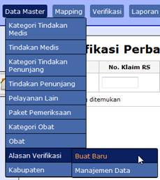
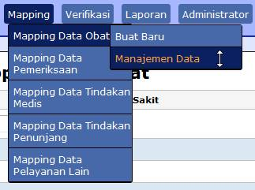
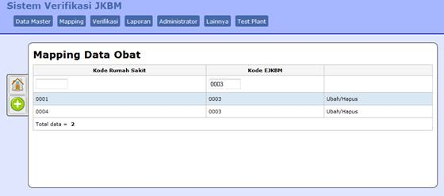
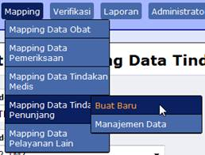
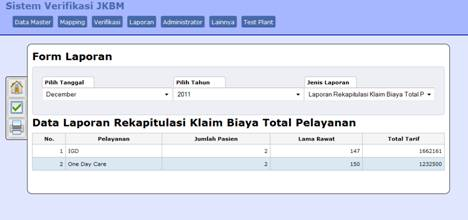

Generated with
chmProcessor
<div class="WordSection1"> <p class="MsoNormal"><span style= "LINE-HEIGHT: 115%; FONT-FAMILY: 'Times New Roman','serif'; FONT-SIZE: 12pt"> </span></p> <p class="MsoNormal"><span style= "LINE-HEIGHT: 115%; FONT-FAMILY: 'Times New Roman','serif'; FONT-SIZE: 12pt"> </span></p> <p class="MsoNormal"><span style= "LINE-HEIGHT: 115%; FONT-FAMILY: 'Times New Roman','serif'; FONT-SIZE: 12pt"> </span></p> <p class="MsoNormal"><span style= "LINE-HEIGHT: 115%; FONT-FAMILY: 'Times New Roman','serif'; FONT-SIZE: 12pt"> </span></p> <p class="MsoNormal"><span style= "LINE-HEIGHT: 115%; FONT-FAMILY: 'Times New Roman','serif'; FONT-SIZE: 12pt"> </span></p> <p class="MsoNormal"><span style= "LINE-HEIGHT: 115%; FONT-FAMILY: 'Times New Roman','serif'; FONT-SIZE: 12pt"> </span></p> <p class="MsoNormal"><span style= "Z-INDEX: 5; POSITION: relative; WIDTH: 5px; HEIGHT: 273px; TOP: 30px; LEFT: -178px"> </span><span style= "LINE-HEIGHT: 115%; FONT-FAMILY: 'Times New Roman','serif'; FONT-SIZE: 12pt"> </span></p> <br clear="all"> <p style="TEXT-INDENT: 0.5in" class="MsoNormal"><span style= "LINE-HEIGHT: 115%; FONT-FAMILY: 'Times New Roman','serif'; FONT-SIZE: 12pt">Z4Comp</span></p> <p style="TEXT-INDENT: 0.5in" class="MsoNormal"><span style= "LINE-HEIGHT: 115%; FONT-FAMILY: 'Times New Roman','serif'; FONT-SIZE: 26pt"> Panduan Penggunaan</span></p> <p style="TEXT-INDENT: 0.5in" class="MsoNormal"><span style= "LINE-HEIGHT: 115%; FONT-FAMILY: 'Times New Roman','serif'; FONT-SIZE: 26pt"> Sistem Verifikasi</span></p> <p style="TEXT-INDENT: 0.5in" class="MsoNormal"><span style= "LINE-HEIGHT: 115%; FONT-FAMILY: 'Times New Roman','serif'; FONT-SIZE: 26pt"> JKBM</span></p> <p style="TEXT-INDENT: 0.5in" class="MsoNormal"><span style= "LINE-HEIGHT: 115%; FONT-FAMILY: 'Times New Roman','serif'; FONT-SIZE: 12pt"> 03-01-2012<br style="PAGE-BREAK-BEFORE: always" clear= "all"></span></p> <p class="MsoNormal"><span style= "LINE-HEIGHT: 115%; FONT-FAMILY: 'Times New Roman','serif'; FONT-SIZE: 12pt"> Pedoman Menggunakan <a name="OLE_LINK4" id="OLE_LINK4"></a><a name= "OLE_LINK3" id="OLE_LINK3">Sistem Verifikasi E-JKBM - SIM RS</a></span></p> <h2 style="LINE-HEIGHT: 150%">A. Mulai menggunakan <a name= "OLE_LINK10" id="OLE_LINK10"></a><a name="OLE_LINK9" id= "OLE_LINK9">Sistem Verifikasi E-JKBM - SIM RS</a></h2> <p style="LINE-HEIGHT: 150%; TEXT-INDENT: -0.25in" class= "MsoListParagraphCxSpFirst"><span style= "LINE-HEIGHT: 150%; FONT-FAMILY: 'Times New Roman','serif'; FONT-SIZE: 12pt"> 1.<span style= "FONT: 7pt 'Times New Roman'"> </span></span> <span style= "LINE-HEIGHT: 150%; FONT-FAMILY: 'Times New Roman','serif'; FONT-SIZE: 12pt"> Buka browser internet anda (Misalnya Mozilla firefox, Internet explorer, Google chrome)</span></p> <p style="LINE-HEIGHT: 150%; TEXT-INDENT: -0.25in" class= "MsoListParagraphCxSpMiddle"><span style= "LINE-HEIGHT: 150%; FONT-FAMILY: 'Times New Roman','serif'; FONT-SIZE: 12pt"> 2.<span style= "FONT: 7pt 'Times New Roman'"> </span></span> <span style= "LINE-HEIGHT: 150%; FONT-FAMILY: 'Times New Roman','serif'; FONT-SIZE: 12pt"> Ketikkan alamat url Sistem Verifikasi E-JKBM - SIM RS (</span><a href= "../../../../../../../../../../../Ruby193/SIM_Verifikasi_RS_EJKBM/DOKUMENTASI%20dan%20DESAIN%20SISTEM/xxx.xxx.xxx.xxx"><span style="LINE-HEIGHT: 150%; FONT-FAMILY: 'Times New Roman','serif'; FONT-SIZE: 12pt">url:xxx.xxx.xxx.xxx</span></a><span style="LINE-HEIGHT: 150%; FONT-FAMILY: 'Times New Roman','serif'; FONT-SIZE: 12pt">) pada kolom browser, maka akan muncul menu login. Seperti pada gambar dibawah ini:</span></p> <p class="MsoListParagraphCxSpMiddle"><span style= "LINE-HEIGHT: 115%; FONT-FAMILY: 'Times New Roman','serif'; FONT-SIZE: 12pt"> </span></p> <p style="TEXT-ALIGN: center" class="MsoListParagraphCxSpMiddle" align="center"><span style= "LINE-HEIGHT: 115%; FONT-FAMILY: 'Times New Roman','serif'; FONT-SIZE: 12pt"> Gambar A.1 Menu Login</span></p> <p style="TEXT-ALIGN: center; LINE-HEIGHT: 150%" class= "MsoListParagraphCxSpMiddle" align="center"><span style= "LINE-HEIGHT: 150%; FONT-FAMILY: 'Times New Roman','serif'; FONT-SIZE: 12pt"> </span></p> <p style="LINE-HEIGHT: 150%; TEXT-INDENT: -0.25in" class= "MsoListParagraphCxSpMiddle"><span style= "LINE-HEIGHT: 150%; FONT-FAMILY: 'Times New Roman','serif'; FONT-SIZE: 12pt"> 3.<span style= "FONT: 7pt 'Times New Roman'"> </span></span> <span style= "LINE-HEIGHT: 150%; FONT-FAMILY: 'Times New Roman','serif'; FONT-SIZE: 12pt"> Dalam form login terdapat kolom <a name="OLE_LINK2" id= "OLE_LINK2"></a><a name="OLE_LINK1" id="OLE_LINK1"><i>Login</i> dan <i>Sandi</i></a>. Masukkan nama <i>Login</i> dan <i>Sandi</i> dengan benar kemudian klik tombol <i>Log in</i>. Setelah login berhasil akan muncul halaman utama.</span></p> <p class="MsoListParagraphCxSpLast"><span style= "LINE-HEIGHT: 115%; FONT-FAMILY: 'Times New Roman','serif'; FONT-SIZE: 12pt"> </span></p> <h2 style="LINE-HEIGHT: 150%">B. Menu Data Master <a name= "NODO46" id="NODO46"></a></h2> <p style="LINE-HEIGHT: 150%; TEXT-INDENT: 0.5in" class="MsoNormal"> <span style= "LINE-HEIGHT: 150%; FONT-FAMILY: 'Times New Roman','serif'; FONT-SIZE: 12pt"> Data master merupakan menu untuk menambah atau memanajemen data yang ada di Sistem Verifikasi E-JKBM - SIM RS seperti data tindakan medis, tindakan penunjang, paket pemeriksaan, obat, alasan verifikasi dan kabupaten.</span></p> <p style= "TEXT-ALIGN: center; LINE-HEIGHT: 150%; TEXT-INDENT: 0.5in" class= "MsoNormal" align="center"><span style= "LINE-HEIGHT: 150%; FONT-FAMILY: 'Times New Roman','serif'; FONT-SIZE: 12pt"> </span></p> <p style="TEXT-ALIGN: center; TEXT-INDENT: 0.5in" class="MsoNormal" align="center"><span style= "LINE-HEIGHT: 115%; FONT-FAMILY: 'Times New Roman','serif'; FONT-SIZE: 12pt"> Gambar B.1 Menu Data Master</span></p> <h3 style="LINE-HEIGHT: 150%"><span style="LINE-HEIGHT: 150%">1. Kategori Tindakan Medis</span><a name="NODO47" id= "NODO47"></a></h3> <h4 style= "LINE-HEIGHT: 150%; TEXT-INDENT: -0.25in; MARGIN: 0in 0in 0pt 0.5in"> <i><span style="LINE-HEIGHT: 150%">a.<span style= "FONT: 7pt 'Times New Roman'"> </span></span></i> <i><span style="LINE-HEIGHT: 150%">Menambah data kategori tindakan medis</span></i> <a name="NODO48" id="NODO48"></a></h4> <p style= "LINE-HEIGHT: 150%; TEXT-INDENT: -0.25in; MARGIN-LEFT: 49.5pt" class="MsoListParagraphCxSpFirst"><a name="OLE_LINK6" id= "OLE_LINK6"></a><a name="OLE_LINK5" id="OLE_LINK5"><span style= "LINE-HEIGHT: 150%; FONT-FAMILY: Symbol; FONT-SIZE: 12pt">·<span style="FONT: 7pt 'Times New Roman'"> </span></span> <span style= "LINE-HEIGHT: 150%; FONT-FAMILY: 'Times New Roman','serif'; FONT-SIZE: 12pt"> Arahkan kursor pada menu <b>data master --> Kategori Tindakan Medis --> ‘</b>Klik<b>’ Buat baru</b>. Maka akan muncul form <b>Buat Baru Kategori Tindakan Medis</b> seperti ditunjukkan pada gambar dibawah.</span></a></p> <p style="LINE-HEIGHT: 150%; MARGIN-LEFT: 49.5pt" class= "MsoListParagraphCxSpMiddle"><span style= "LINE-HEIGHT: 150%; FONT-FAMILY: 'Times New Roman','serif'; FONT-SIZE: 12pt"> </span></p> <p style= "TEXT-ALIGN: center; LINE-HEIGHT: 150%; MARGIN-LEFT: 49.5pt" class= "MsoListParagraphCxSpMiddle" align="center"><span style= "FONT-FAMILY: 'Times New Roman','serif'">Gambar B.2 Buat baru Kategori Tindakan Medis</span></p> <p style= "LINE-HEIGHT: 150%; TEXT-INDENT: -0.25in; MARGIN: 0in 0in 0pt 49.5pt" class="MsoListParagraphCxSpLast"><span style= "LINE-HEIGHT: 150%; FONT-FAMILY: Symbol; FONT-SIZE: 12pt">·<span style="FONT: 7pt 'Times New Roman'"> </span></span> <span style= "LINE-HEIGHT: 150%; FONT-FAMILY: 'Times New Roman','serif'; FONT-SIZE: 12pt"> Masukkan kode kategori tindakan medis pada kolom <b>kode</b> dan masukkan nama kategori tindakan medis pada kolom <b>nama.</b> Kemudian klik tombol simpan. </span></p> <h4 style="TEXT-INDENT: -0.25in; MARGIN-LEFT: 0.5in">b.<span style= "FONT: 7pt 'Times New Roman'"> </span> Memanajemen data kategori tindakan medis.<a name="NODO49" id= "NODO49"></a></h4> <p style= "LINE-HEIGHT: 150%; TEXT-INDENT: -0.25in; MARGIN-LEFT: 49.5pt" class="MsoListParagraphCxSpFirst"><span style= "LINE-HEIGHT: 150%; FONT-FAMILY: Symbol; FONT-SIZE: 12pt">·<span style="FONT: 7pt 'Times New Roman'"> </span></span> <span style= "LINE-HEIGHT: 150%; FONT-FAMILY: 'Times New Roman','serif'; FONT-SIZE: 12pt"> Arahkan kursor pada menu <b>data master --> Kategori Tindakan Medis --> ‘</b>Klik<b>’ Manajemen Data.</b> Maka akan muncul form <b>Data Kategori Tindakan Medis</b> seperti ditunjukkan pada gambar dibawah.</span></p> <p style= "TEXT-ALIGN: center; LINE-HEIGHT: 150%; MARGIN-LEFT: 49.5pt" class= "MsoListParagraphCxSpMiddle" align="center"><b><span style= "LINE-HEIGHT: 150%; FONT-FAMILY: 'Times New Roman','serif'; FONT-SIZE: 12pt"> </span></b></p> <p style="LINE-HEIGHT: 150%; MARGIN-LEFT: 49.5pt" class= "MsoListParagraphCxSpMiddle"><b><span style= "LINE-HEIGHT: 150%; FONT-FAMILY: 'Times New Roman','serif'; FONT-SIZE: 12pt"> </span></b></p> <p style= "LINE-HEIGHT: 150%; TEXT-INDENT: -0.25in; MARGIN: 0in 0in 0pt 49.5pt" class="MsoListParagraphCxSpMiddle"><span style= "LINE-HEIGHT: 150%; FONT-FAMILY: Symbol; FONT-SIZE: 12pt">·<span style="FONT: 7pt 'Times New Roman'"> </span></span> <span style= "LINE-HEIGHT: 150%; FONT-FAMILY: 'Times New Roman','serif'; FONT-SIZE: 12pt"> Pada <b>Data Kategori Tindakan Medis</b> dapat dilakukan pencarian berdasarkan kode atau Nama dengan memasukkan kata kunci pada kolom yang disediakan. Jika ingin menambah kategori baru dapat menggunakan tombol tambah <img border="0" src= "PEDOMAN_files/image008.jpg" width="37" height="38" alt="image">di sebelah kiri.</span></p> <p style="LINE-HEIGHT: 150%; MARGIN: 0in 0in 0pt 49.5pt" class= "MsoListParagraphCxSpLast"><span style= "LINE-HEIGHT: 150%; FONT-FAMILY: 'Times New Roman','serif'; FONT-SIZE: 12pt"> </span></p> <h3>2. Tindakan Medis<a name="NODO50" id="NODO50"></a></h3> <h4 style="TEXT-INDENT: -0.25in; MARGIN-LEFT: 0.5in">c.<span style= "FONT: 7pt 'Times New Roman'"> </span> Menambah data tindakan medis <a name="NODO51" id="NODO51"></a></h4> <p style= "LINE-HEIGHT: 150%; TEXT-INDENT: -0.25in; MARGIN-LEFT: 49.5pt" class="MsoListParagraphCxSpFirst"><span style= "LINE-HEIGHT: 150%; FONT-FAMILY: Symbol; FONT-SIZE: 12pt">·<span style="FONT: 7pt 'Times New Roman'"> </span></span> <span style= "LINE-HEIGHT: 150%; FONT-FAMILY: 'Times New Roman','serif'; FONT-SIZE: 12pt"> Arahkan kursor pada menu <b>data master --> Tindakan Medis --> ‘</b>Klik<b>’ Buat baru</b>. Maka akan muncul form <b>Buat Baru Tindakan Medis</b> seperti ditunjukkan pada gambar dibawah.</span></p> <p style="LINE-HEIGHT: 150%; MARGIN-LEFT: 49.5pt" class= "MsoListParagraphCxSpMiddle"><span style= "LINE-HEIGHT: 150%; FONT-FAMILY: 'Times New Roman','serif'; FONT-SIZE: 12pt"> </span></p> <p style= "LINE-HEIGHT: 150%; TEXT-INDENT: -0.25in; MARGIN: 0in 0in 0pt 49.5pt" class="MsoListParagraphCxSpLast"><span style= "LINE-HEIGHT: 150%; FONT-FAMILY: Symbol; FONT-SIZE: 12pt">·<span style="FONT: 7pt 'Times New Roman'"> </span></span> <span style= "LINE-HEIGHT: 150%; FONT-FAMILY: 'Times New Roman','serif'; FONT-SIZE: 12pt"> Masukkan kode tindakan medis pada kolom <b>kode,</b> masukkan kode kategori tindakan medis pada kolom <b>kode kategori tindakan medis,</b> masukan nama tindakan medis pada kolom <b>nama,</b> masukan tarif atau biaya tindakan medis pada kolom <b>tarif,</b> dan pilih salah satu flag (Puskesmas atau rumah sakit)<b>.</b> Kemudian klik tombol simpan. </span></p> <h4 style="TEXT-INDENT: -0.25in; MARGIN-LEFT: 0.5in">d.<span style= "FONT: 7pt 'Times New Roman'"> </span> Manajemen data tindakan medis.<a name="NODO52" id= "NODO52"></a></h4> <p style= "LINE-HEIGHT: 150%; TEXT-INDENT: -0.25in; MARGIN-LEFT: 49.5pt" class="MsoListParagraphCxSpFirst"><span style= "LINE-HEIGHT: 150%; FONT-FAMILY: Symbol; FONT-SIZE: 12pt">·<span style="FONT: 7pt 'Times New Roman'"> </span></span> <span style= "LINE-HEIGHT: 150%; FONT-FAMILY: 'Times New Roman','serif'; FONT-SIZE: 12pt"> Arahkan kursor pada menu <b>data master --> Tindakan Medis --></b> ‘Klik’ <b>Manajemen Data</b> seperti ditunjukkan pada gambar dibawah. Maka akan muncul form <b>Data Tindakan Medis</b>.</span></p> <p style= "TEXT-ALIGN: center; LINE-HEIGHT: 150%; MARGIN-LEFT: 49.5pt" class= "MsoListParagraphCxSpMiddle" align="center"><b><span style= "LINE-HEIGHT: 150%; FONT-FAMILY: 'Times New Roman','serif'; FONT-SIZE: 12pt"> </span></b></p> <p style= "LINE-HEIGHT: 150%; TEXT-INDENT: -0.25in; MARGIN: 0in 0in 0pt 49.5pt" class="MsoListParagraphCxSpMiddle"><span style= "LINE-HEIGHT: 150%; FONT-FAMILY: Symbol; FONT-SIZE: 12pt">·<span style="FONT: 7pt 'Times New Roman'"> </span></span> <span style= "LINE-HEIGHT: 150%; FONT-FAMILY: 'Times New Roman','serif'; FONT-SIZE: 12pt"> Pada <b>Data Tindakan Medis</b> dapat dilakukan pencarian berdasarkan kode, kategori tindakan medis, atau Nama dengan memasukkan kata kunci pada kolom yang disediakan (ditunjukan pada gambar dibawah ini). Jika ingin menambah kategori baru dapat menggunakan tombol tambah di sebelah kiri. </span></p> <p style="LINE-HEIGHT: 150%; MARGIN: 0in 0in 0pt 49.5pt" class= "MsoListParagraphCxSpLast"><span style= "LINE-HEIGHT: 150%; FONT-FAMILY: 'Times New Roman','serif'; FONT-SIZE: 12pt"> </span></p> <h3>3. Kategori Tindakan Penunjang<a name="NODO53" id= "NODO53"></a></h3> <h4 style="TEXT-INDENT: -0.25in; MARGIN-LEFT: 0.5in">e.<span style= "FONT: 7pt 'Times New Roman'"> </span> Menambah data kategori tindakan penunjang<a name="NODO54" id= "NODO54"></a></h4> <p style= "LINE-HEIGHT: 150%; TEXT-INDENT: -0.25in; MARGIN-LEFT: 49.5pt" class="MsoListParagraphCxSpFirst"><span style= "LINE-HEIGHT: 150%; FONT-FAMILY: Symbol; FONT-SIZE: 12pt">·<span style="FONT: 7pt 'Times New Roman'"> </span></span> <span style= "LINE-HEIGHT: 150%; FONT-FAMILY: 'Times New Roman','serif'; FONT-SIZE: 12pt"> Arahkan kursor pada menu <b>data master --> Kategori Tindakan Penunjang --> ‘Klik’ Buat baru</b>. Maka akan muncul form <b>Buat Baru Kategori Tindakan Penunjang</b> seperti ditunjukkan pada gambar dibawah.</span></p> <p style="LINE-HEIGHT: 150%; MARGIN-LEFT: 49.5pt" class= "MsoListParagraphCxSpMiddle"><span style= "LINE-HEIGHT: 150%; FONT-FAMILY: 'Times New Roman','serif'; FONT-SIZE: 12pt"> </span></p> <p style= "TEXT-ALIGN: center; LINE-HEIGHT: 150%; MARGIN-LEFT: 49.5pt" class= "MsoListParagraphCxSpMiddle" align="center"><span style= "FONT-FAMILY: 'Times New Roman','serif'">Gambar B.2 Buat baru Kategori Tindakan Penunjang</span></p> <p style= "LINE-HEIGHT: 150%; TEXT-INDENT: -0.25in; MARGIN: 0in 0in 0pt 49.5pt" class="MsoListParagraphCxSpLast"><span style= "LINE-HEIGHT: 150%; FONT-FAMILY: Symbol; FONT-SIZE: 12pt">·<span style="FONT: 7pt 'Times New Roman'"> </span></span> <span style= "LINE-HEIGHT: 150%; FONT-FAMILY: 'Times New Roman','serif'; FONT-SIZE: 12pt"> Masukkan kode kategori tindakan penunjang pada kolom <b>kode</b> dan masukkan nama kategori tindakan penunjang pada kolom <b>nama.</b> Kemudian klik tombol simpan. </span></p> <h4 style="TEXT-INDENT: -0.25in; MARGIN-LEFT: 0.5in">f.<span style= "FONT: 7pt 'Times New Roman'"> </span> Memanajemen data kategori tindakan penunjang.<a name="NODO55" id= "NODO55"></a></h4> <p style= "LINE-HEIGHT: 150%; TEXT-INDENT: -0.25in; MARGIN-LEFT: 49.5pt" class="MsoListParagraphCxSpFirst"><span style= "LINE-HEIGHT: 150%; FONT-FAMILY: Symbol; FONT-SIZE: 12pt">·<span style="FONT: 7pt 'Times New Roman'"> </span></span> <span style= "LINE-HEIGHT: 150%; FONT-FAMILY: 'Times New Roman','serif'; FONT-SIZE: 12pt"> Arahkan kursor pada menu <b>data master --> Kategori Tindakan Penunjang --> ‘</b>Klik<b>’ Manajemen Data.</b> Maka akan muncul form <b>Data Kategori Tindakan Penunjang</b> seperti ditunjukkan pada gambar dibawah.</span></p> <p style= "TEXT-ALIGN: center; LINE-HEIGHT: 150%; MARGIN-LEFT: 49.5pt" class= "MsoListParagraphCxSpMiddle" align="center"><b><span style= "LINE-HEIGHT: 150%; FONT-FAMILY: 'Times New Roman','serif'; FONT-SIZE: 12pt"> </span></b></p> <p style="LINE-HEIGHT: 150%; MARGIN-LEFT: 49.5pt" class= "MsoListParagraphCxSpMiddle"><b><span style= "LINE-HEIGHT: 150%; FONT-FAMILY: 'Times New Roman','serif'; FONT-SIZE: 12pt"> </span></b></p> <p style= "LINE-HEIGHT: 150%; TEXT-INDENT: -0.25in; MARGIN: 0in 0in 0pt 49.5pt" class="MsoListParagraphCxSpMiddle"><span style= "LINE-HEIGHT: 150%; FONT-FAMILY: Symbol; FONT-SIZE: 12pt">·<span style="FONT: 7pt 'Times New Roman'"> </span></span> <span style= "LINE-HEIGHT: 150%; FONT-FAMILY: 'Times New Roman','serif'; FONT-SIZE: 12pt"> Pada <b>Data Kategori Tindakan Penunjang</b> dapat dilakukan pencarian berdasarkan kode atau Nama dengan memasukkan kata kunci pada kolom yang disediakan. Jika ingin menambah kategori baru dapat menggunakan tombol tambah <img border="0" src= "PEDOMAN_files/image008.jpg" width="37" height="38" alt="image">di sebelah kiri.</span></p> <p style="LINE-HEIGHT: 150%; MARGIN: 0in 0in 0pt 49.5pt" class= "MsoListParagraphCxSpLast"><span style= "LINE-HEIGHT: 150%; FONT-FAMILY: 'Times New Roman','serif'; FONT-SIZE: 12pt"> </span></p> <h3> 4. Tindakan Penunjang<a name="NODO56" id= "NODO56"></a></h3> <h4 style="TEXT-INDENT: -0.25in; MARGIN-LEFT: 0.5in">g.<span style= "FONT: 7pt 'Times New Roman'"> </span> Menambah data tindakan penunjang<a name="NODO57" id= "NODO57"></a></h4> <p style= "LINE-HEIGHT: 150%; TEXT-INDENT: -0.25in; MARGIN-LEFT: 49.5pt" class="MsoListParagraphCxSpFirst"><span style= "LINE-HEIGHT: 150%; FONT-FAMILY: Symbol; FONT-SIZE: 12pt">·<span style="FONT: 7pt 'Times New Roman'"> </span></span> <span style= "LINE-HEIGHT: 150%; FONT-FAMILY: 'Times New Roman','serif'; FONT-SIZE: 12pt"> Arahkan kursor pada menu <b>data master --> Tindakan Penunjang --> ‘</b>Klik<b>’ Buat baru</b>. Maka akan muncul form <b>Buat Baru Tindakan Medis</b> seperti ditunjukkan pada gambar dibawah.</span></p> <p style= "TEXT-ALIGN: center; LINE-HEIGHT: 150%; MARGIN-LEFT: 49.5pt" class= "MsoListParagraphCxSpMiddle" align="center"><span style= "LINE-HEIGHT: 150%; FONT-FAMILY: 'Times New Roman','serif'; FONT-SIZE: 12pt"> </span></p> <p style= "LINE-HEIGHT: 150%; TEXT-INDENT: -0.25in; MARGIN: 0in 0in 0pt 49.5pt" class="MsoListParagraphCxSpMiddle"><span style= "LINE-HEIGHT: 150%; FONT-FAMILY: Symbol; FONT-SIZE: 12pt">·<span style="FONT: 7pt 'Times New Roman'"> </span></span> <span style= "LINE-HEIGHT: 150%; FONT-FAMILY: 'Times New Roman','serif'; FONT-SIZE: 12pt"> Masukkan kode tindakan penunjang pada kolom <b>kode,</b> masukkan kode kategori tindakan penunjang pada kolom <b>kode kategori tindakan penunjang,</b> masukan nama tindakan penunjang pada kolom <b>nama,</b> masukan tarif atau biaya tindakan penunjang pada kolom <b>tarif,</b> dan pilih salah satu flag (Puskesmas atau rumah sakit)<b>.</b> Kemudian klik tombol simpan. . Dapat dilihat pada gambar dibawah ini.</span></p> <p style="LINE-HEIGHT: 150%; MARGIN: 0in 0in 0pt 49.5pt" class= "MsoListParagraphCxSpLast"><span style= "LINE-HEIGHT: 150%; FONT-FAMILY: 'Times New Roman','serif'; FONT-SIZE: 12pt"> <img border="0" src="PEDOMAN_files/image018.jpg" width="490" height="286" alt="image"></span></p> <h4 style="TEXT-INDENT: -0.25in; MARGIN-LEFT: 0.5in">h.<span style= "FONT: 7pt 'Times New Roman'"> </span> Manajemen data tindakan penunjang.<a name="NODO58" id= "NODO58"></a></h4> <p style= "LINE-HEIGHT: 150%; TEXT-INDENT: -0.25in; MARGIN-LEFT: 49.5pt" class="MsoListParagraphCxSpFirst"><span style= "LINE-HEIGHT: 150%; FONT-FAMILY: Symbol; FONT-SIZE: 12pt">·<span style="FONT: 7pt 'Times New Roman'"> </span></span> <span style= "LINE-HEIGHT: 150%; FONT-FAMILY: 'Times New Roman','serif'; FONT-SIZE: 12pt"> Arahkan kursor pada menu <b>data master --> Tindakan Penunjang --></b> ‘Klik’ <b>Manajemen Data</b> seperti ditunjukkan pada gambar dibawah.. Maka akan muncul form <b>Data Tindakan Penunjang</b></span></p> <p style= "TEXT-ALIGN: center; LINE-HEIGHT: 150%; MARGIN-LEFT: 49.5pt" class= "MsoListParagraphCxSpMiddle" align="center"><b><span style= "LINE-HEIGHT: 150%; FONT-FAMILY: 'Times New Roman','serif'; FONT-SIZE: 12pt"> </span></b></p> <p style= "TEXT-ALIGN: justify; LINE-HEIGHT: 150%; TEXT-INDENT: -0.25in; MARGIN: 0in 0in 0pt 49.5pt" class="MsoListParagraphCxSpMiddle"><span style= "LINE-HEIGHT: 150%; FONT-FAMILY: Symbol; FONT-SIZE: 12pt">·<span style="FONT: 7pt 'Times New Roman'"> </span></span> <span style= "LINE-HEIGHT: 150%; FONT-FAMILY: 'Times New Roman','serif'; FONT-SIZE: 12pt"> Pada <b>Data Tindakan Penunjang</b> dapat dilakukan pencarian berdasarkan kode, kategori tindakan penunjang, atau Nama dengan memasukkan kata kunci pada kolom yang disediakan (ditunjukan pada gambar dibawah ini). Jika ingin menambah kategori baru dapat menggunakan tombol tambah di sebelah kiri. </span></p> <p style="LINE-HEIGHT: 150%; MARGIN: 0in 0in 0pt 49.5pt" class= "MsoListParagraphCxSpLast"><span style= "LINE-HEIGHT: 150%; FONT-FAMILY: 'Times New Roman','serif'; FONT-SIZE: 12pt"> </span></p> <h3>5. Paket Pemeriksaan<a name="NODO59" id="NODO59"></a></h3> <h4 style="TEXT-INDENT: -0.25in; MARGIN-LEFT: 0.5in">i.<span style= "FONT: 7pt 'Times New Roman'"> </span> Menambah data Paket Pemeriksaan<a name="NODO60" id= "NODO60"></a></h4> <p style= "LINE-HEIGHT: 150%; TEXT-INDENT: -0.25in; MARGIN-LEFT: 49.5pt" class="MsoListParagraphCxSpFirst"><span style= "LINE-HEIGHT: 150%; FONT-FAMILY: Symbol; FONT-SIZE: 12pt">·<span style="FONT: 7pt 'Times New Roman'"> </span></span> <span style= "LINE-HEIGHT: 150%; FONT-FAMILY: 'Times New Roman','serif'; FONT-SIZE: 12pt"> Arahkan kursor pada menu <b>data master --> Paket Pemeriksaan --> ‘</b>Klik<b>’ Buat baru</b>. Maka akan muncul form <b>Buat Baru Paket Pemeriksaan</b> seperti ditunjukkan pada gambar dibawah.</span></p> <p style= "TEXT-ALIGN: center; LINE-HEIGHT: 150%; MARGIN-LEFT: 49.5pt" class= "MsoListParagraphCxSpMiddle" align="center"><span style= "LINE-HEIGHT: 150%; FONT-FAMILY: 'Times New Roman','serif'; FONT-SIZE: 12pt"> </span></p> <p style= "LINE-HEIGHT: 150%; TEXT-INDENT: -0.25in; MARGIN: 0in 0in 0pt 49.5pt" class="MsoListParagraphCxSpMiddle"><span style= "LINE-HEIGHT: 150%; FONT-FAMILY: Symbol; FONT-SIZE: 12pt">·<span style="FONT: 7pt 'Times New Roman'"> </span></span> <span style= "LINE-HEIGHT: 150%; FONT-FAMILY: 'Times New Roman','serif'; FONT-SIZE: 12pt"> Masukkan kode paket pemeriksaan pada kolom <b>kode,</b> dan lain sebagainya pada form<b>.</b> Kemudian klik tombol simpan. . Dapat dilihat pada gambar dibawah ini.</span></p> <p style="LINE-HEIGHT: 150%; MARGIN: 0in 0in 0pt 49.5pt" class= "MsoListParagraphCxSpLast"><span style= "LINE-HEIGHT: 150%; FONT-FAMILY: 'Times New Roman','serif'; FONT-SIZE: 12pt"> </span></p> <h4 style="TEXT-INDENT: -0.25in; MARGIN-LEFT: 0.5in">j.<span style= "FONT: 7pt 'Times New Roman'"> </span> Manajemen data pemeriksaan.<a name="NODO61" id="NODO61"></a></h4> <p style= "LINE-HEIGHT: 150%; TEXT-INDENT: -0.25in; MARGIN-LEFT: 49.5pt" class="MsoListParagraphCxSpFirst"><span style= "LINE-HEIGHT: 150%; FONT-FAMILY: Symbol; FONT-SIZE: 12pt">·<span style="FONT: 7pt 'Times New Roman'"> </span></span> <span style= "LINE-HEIGHT: 150%; FONT-FAMILY: 'Times New Roman','serif'; FONT-SIZE: 12pt"> Arahkan kursor pada menu <b>data master --> Paket Pemeriksaan--></b> ‘Klik’ <b>Manajemen Data</b> seperti ditunjukkan pada gambar dibawah.. Maka akan muncul form <b>Data Pemeriksaan</b></span></p> <p style= "TEXT-ALIGN: center; LINE-HEIGHT: 150%; MARGIN-LEFT: 49.5pt" class= "MsoListParagraphCxSpMiddle" align="center"><b><span style= "LINE-HEIGHT: 150%; FONT-FAMILY: 'Times New Roman','serif'; FONT-SIZE: 12pt"> </span></b></p> <p style= "TEXT-ALIGN: justify; LINE-HEIGHT: 150%; TEXT-INDENT: -0.25in; MARGIN: 0in 0in 0pt 49.5pt" class="MsoListParagraphCxSpMiddle"><span style= "LINE-HEIGHT: 150%; FONT-FAMILY: Symbol; FONT-SIZE: 12pt">·<span style="FONT: 7pt 'Times New Roman'"> </span></span> <span style= "LINE-HEIGHT: 150%; FONT-FAMILY: 'Times New Roman','serif'; FONT-SIZE: 12pt"> Pada <b>Data Pemeriksaan</b> dapat dilakukan pencarian berdasarkan kode atau Nama dengan memasukkan kata kunci pada kolom yang disediakan (ditunjukan pada gambar dibawah ini). Jika ingin menambah kategori baru dapat menggunakan tombol tambah di sebelah kiri. </span></p> <p style="LINE-HEIGHT: 150%; MARGIN: 0in 0in 0pt 49.5pt" class= "MsoListParagraphCxSpLast"><span style= "LINE-HEIGHT: 150%; FONT-FAMILY: 'Times New Roman','serif'; FONT-SIZE: 12pt"> </span></p> <h3>6. Kategori Obat<a name="NODO62" id="NODO62"></a></h3> <h4 style="TEXT-INDENT: -0.25in; MARGIN-LEFT: 0.5in">k.<span style= "FONT: 7pt 'Times New Roman'"> </span> Menambah data Kategori Obat<a name="NODO63" id="NODO63"></a></h4> <p style= "LINE-HEIGHT: 150%; TEXT-INDENT: -0.25in; MARGIN-LEFT: 49.5pt" class="MsoListParagraphCxSpFirst"><span style= "LINE-HEIGHT: 150%; FONT-FAMILY: Symbol; FONT-SIZE: 12pt">·<span style="FONT: 7pt 'Times New Roman'"> </span></span> <span style= "LINE-HEIGHT: 150%; FONT-FAMILY: 'Times New Roman','serif'; FONT-SIZE: 12pt"> Arahkan kursor pada menu <b>data master --> Kategori obat --> ‘</b>Klik<b>’ Buat baru</b>. Maka akan muncul form <b>Buat Baru Kategori Obat</b> seperti ditunjukkan pada gambar dibawah.</span></p> <p style= "TEXT-ALIGN: center; LINE-HEIGHT: 150%; MARGIN-LEFT: 49.5pt" class= "MsoListParagraphCxSpMiddle" align="center"><span style= "LINE-HEIGHT: 150%; FONT-FAMILY: 'Times New Roman','serif'; FONT-SIZE: 12pt"> </span></p> <p style= "LINE-HEIGHT: 150%; TEXT-INDENT: -0.25in; MARGIN: 0in 0in 0pt 49.5pt" class="MsoListParagraphCxSpMiddle"><span style= "LINE-HEIGHT: 150%; FONT-FAMILY: Symbol; FONT-SIZE: 12pt">·<span style="FONT: 7pt 'Times New Roman'"> </span></span> <span style= "LINE-HEIGHT: 150%; FONT-FAMILY: 'Times New Roman','serif'; FONT-SIZE: 12pt"> Masukkan kode kategori obat pada kolom <b>kode</b> dan lain sebagainya pada form<b>.</b> Kemudian klik tombol simpan. . Dapat dilihat pada gambar dibawah ini.</span></p> <p style="LINE-HEIGHT: 150%; MARGIN: 0in 0in 0pt 49.5pt" class= "MsoListParagraphCxSpLast"><span style= "LINE-HEIGHT: 150%; FONT-FAMILY: 'Times New Roman','serif'; FONT-SIZE: 12pt"> </span></p> <h4 style="TEXT-INDENT: -0.25in; MARGIN-LEFT: 0.5in">l.<span style= "FONT: 7pt 'Times New Roman'"> </span> Manajemen data kategori obat.<a name="NODO64" id="NODO64"></a></h4> <p style= "LINE-HEIGHT: 150%; TEXT-INDENT: -0.25in; MARGIN-LEFT: 49.5pt" class="MsoListParagraphCxSpFirst"><span style= "LINE-HEIGHT: 150%; FONT-FAMILY: Symbol; FONT-SIZE: 12pt">·<span style="FONT: 7pt 'Times New Roman'"> </span></span> <span style= "LINE-HEIGHT: 150%; FONT-FAMILY: 'Times New Roman','serif'; FONT-SIZE: 12pt"> Arahkan kursor pada menu <b>data master --> kategori obat--></b> ‘Klik’ <b>Manajemen Data</b> seperti ditunjukkan pada gambar dibawah.. Maka akan muncul form <b>Data kategori obat</b></span></p> <p style= "TEXT-ALIGN: center; LINE-HEIGHT: 150%; MARGIN-LEFT: 49.5pt" class= "MsoListParagraphCxSpMiddle" align="center"><b><span style= "LINE-HEIGHT: 150%; FONT-FAMILY: 'Times New Roman','serif'; FONT-SIZE: 12pt"> </span></b></p> <p style= "TEXT-ALIGN: justify; LINE-HEIGHT: 150%; TEXT-INDENT: -0.25in; MARGIN: 0in 0in 0pt 49.5pt" class="MsoListParagraphCxSpLast"><span style= "LINE-HEIGHT: 150%; FONT-FAMILY: Symbol; FONT-SIZE: 12pt">·<span style="FONT: 7pt 'Times New Roman'"> </span></span> <span style= "LINE-HEIGHT: 150%; FONT-FAMILY: 'Times New Roman','serif'; FONT-SIZE: 12pt"> Pada <b>Data Kategori Obat</b> dapat dilakukan pencarian berdasarkan kode atau Nama dengan memasukkan kata kunci pada kolom yang disediakan (ditunjukan pada gambar dibawah ini). Jika ingin menambah kategori baru dapat menggunakan tombol tambah di sebelah kiri. </span></p> <h3>7. Obat<a name="NODO65" id="NODO65"></a></h3> <h4 style="TEXT-INDENT: -0.25in; MARGIN-LEFT: 0.5in">m.<span style= "FONT: 7pt 'Times New Roman'"> </span> Menambah data Obat<a name="NODO66" id="NODO66"></a></h4> <p style= "LINE-HEIGHT: 150%; TEXT-INDENT: -0.25in; MARGIN-LEFT: 49.5pt" class="MsoListParagraphCxSpFirst"><span style= "LINE-HEIGHT: 150%; FONT-FAMILY: Symbol; FONT-SIZE: 12pt">·<span style="FONT: 7pt 'Times New Roman'"> </span></span> <span style= "LINE-HEIGHT: 150%; FONT-FAMILY: 'Times New Roman','serif'; FONT-SIZE: 12pt"> Arahkan kursor pada menu <b>data master --> Obat --> ‘</b>Klik<b>’ Buat baru</b>. Maka akan muncul form <b>Buat Baru Data Obat</b> seperti ditunjukkan pada gambar dibawah.</span></p> <p style= "TEXT-ALIGN: center; LINE-HEIGHT: 150%; MARGIN-LEFT: 49.5pt" class= "MsoListParagraphCxSpMiddle" align="center"><span style= "LINE-HEIGHT: 150%; FONT-FAMILY: 'Times New Roman','serif'; FONT-SIZE: 12pt"> </span></p> <p style= "LINE-HEIGHT: 150%; TEXT-INDENT: -0.25in; MARGIN: 0in 0in 0pt 49.5pt" class="MsoListParagraphCxSpMiddle"><span style= "LINE-HEIGHT: 150%; FONT-FAMILY: Symbol; FONT-SIZE: 12pt">·<span style="FONT: 7pt 'Times New Roman'"> </span></span> <span style= "LINE-HEIGHT: 150%; FONT-FAMILY: 'Times New Roman','serif'; FONT-SIZE: 12pt"> Masukkan kode obat pada kolom <b>kode,</b> <b>,</b> dan lain sebagainya pada form<b>.</b> Kemudian klik tombol simpan. . Dapat dilihat pada gambar dibawah ini.</span></p> <p style="LINE-HEIGHT: 150%; MARGIN: 0in 0in 0pt 49.5pt" class= "MsoListParagraphCxSpLast"><span style= "LINE-HEIGHT: 150%; FONT-FAMILY: 'Times New Roman','serif'; FONT-SIZE: 12pt"> <img border="0" src="PEDOMAN_files/image029.jpg" width="546" height="278" alt="image"></span></p> <h4 style="TEXT-INDENT: -0.25in; MARGIN-LEFT: 0.5in">n.<span style= "FONT: 7pt 'Times New Roman'"> </span> Manajemen data Obat.<a name="NODO67" id="NODO67"></a></h4> <p style= "LINE-HEIGHT: 150%; TEXT-INDENT: -0.25in; MARGIN-LEFT: 49.5pt" class="MsoListParagraphCxSpFirst"><span style= "LINE-HEIGHT: 150%; FONT-FAMILY: Symbol; FONT-SIZE: 12pt">·<span style="FONT: 7pt 'Times New Roman'"> </span></span> <span style= "LINE-HEIGHT: 150%; FONT-FAMILY: 'Times New Roman','serif'; FONT-SIZE: 12pt"> Arahkan kursor pada menu <b>data master --> Obat--></b> ‘Klik’ <b>Manajemen Data</b> seperti ditunjukkan pada gambar dibawah.. Maka akan muncul form <b>Data Obat</b></span></p> <p style= "TEXT-ALIGN: center; LINE-HEIGHT: 150%; MARGIN-LEFT: 49.5pt" class= "MsoListParagraphCxSpMiddle" align="center"><b><span style= "LINE-HEIGHT: 150%; FONT-FAMILY: 'Times New Roman','serif'; FONT-SIZE: 12pt"> </span></b></p> <p style= "TEXT-ALIGN: justify; LINE-HEIGHT: 150%; TEXT-INDENT: -0.25in; MARGIN: 0in 0in 0pt 49.5pt" class="MsoListParagraphCxSpMiddle"><span style= "LINE-HEIGHT: 150%; FONT-FAMILY: Symbol; FONT-SIZE: 12pt">·<span style="FONT: 7pt 'Times New Roman'"> </span></span> <span style= "LINE-HEIGHT: 150%; FONT-FAMILY: 'Times New Roman','serif'; FONT-SIZE: 12pt"> Pada <b>Data Obat</b> dapat dilakukan pencarian berdasarkan kode, kategori tindakan penunjang, atau Nama dengan memasukkan kata kunci pada kolom yang disediakan (ditunjukan pada gambar dibawah ini). Jika ingin menambah kategori baru dapat menggunakan tombol tambah di sebelah kiri. </span></p> <p style="LINE-HEIGHT: 150%; MARGIN: 0in 0in 0pt 49.5pt" class= "MsoListParagraphCxSpMiddle"><span style= "LINE-HEIGHT: 150%; FONT-FAMILY: 'Times New Roman','serif'; FONT-SIZE: 12pt"> </span></p> <p style="LINE-HEIGHT: 150%; MARGIN: 0in 0in 0pt 49.5pt" class= "MsoListParagraphCxSpLast"><span style= "LINE-HEIGHT: 150%; FONT-FAMILY: 'Times New Roman','serif'; FONT-SIZE: 12pt"> </span></p> <h3>8. Alasan Verifikasi<a name="NODO68" id="NODO68"></a></h3> <h4 style="TEXT-INDENT: -0.25in; MARGIN-LEFT: 0.5in">o.<span style= "FONT: 7pt 'Times New Roman'"> </span> Menambah data Verifikasi<a name="NODO69" id="NODO69"></a></h4> <p style= "LINE-HEIGHT: 150%; TEXT-INDENT: -0.25in; MARGIN-LEFT: 49.5pt" class="MsoListParagraphCxSpFirst"><span style= "LINE-HEIGHT: 150%; FONT-FAMILY: Symbol; FONT-SIZE: 12pt">·<span style="FONT: 7pt 'Times New Roman'"> </span></span> <span style= "LINE-HEIGHT: 150%; FONT-FAMILY: 'Times New Roman','serif'; FONT-SIZE: 12pt"> Arahkan kursor pada menu <b>data master --> Alasan Verifikasi --> ‘</b>Klik<b>’ Buat baru</b>. Maka akan muncul form <b>Buat Baru Alasan Verifikasi</b> seperti ditunjukkan pada gambar dibawah.</span></p> <p style= "TEXT-ALIGN: center; LINE-HEIGHT: 150%; MARGIN-LEFT: 49.5pt" class= "MsoListParagraphCxSpMiddle" align="center"><span style= "LINE-HEIGHT: 150%; FONT-FAMILY: 'Times New Roman','serif'; FONT-SIZE: 12pt"> </span></p> <p style= "LINE-HEIGHT: 150%; TEXT-INDENT: -0.25in; MARGIN: 0in 0in 0pt 49.5pt" class="MsoListParagraphCxSpMiddle"><span style= "LINE-HEIGHT: 150%; FONT-FAMILY: Symbol; FONT-SIZE: 12pt">·<span style="FONT: 7pt 'Times New Roman'"> </span></span> <span style= "LINE-HEIGHT: 150%; FONT-FAMILY: 'Times New Roman','serif'; FONT-SIZE: 12pt"> Masukkan kode alasan verifikasi pada kolom <b>kode,</b> <b>,</b> dan lain sebagainya pada form<b>.</b> Kemudian klik tombol simpan. . Dapat dilihat pada gambar dibawah ini.</span></p> <p style="LINE-HEIGHT: 150%; MARGIN: 0in 0in 0pt 49.5pt" class= "MsoListParagraphCxSpLast"><span style= "LINE-HEIGHT: 150%; FONT-FAMILY: 'Times New Roman','serif'; FONT-SIZE: 12pt"> </span></p> <h4 style="TEXT-INDENT: -0.25in; MARGIN-LEFT: 0.5in">p.<span style= "FONT: 7pt 'Times New Roman'"> </span> Manajemen data Alasan verifikasi.<a name="NODO70" id= "NODO70"></a></h4> <p style= "LINE-HEIGHT: 150%; TEXT-INDENT: -0.25in; MARGIN-LEFT: 49.5pt" class="MsoListParagraphCxSpFirst"><span style= "LINE-HEIGHT: 150%; FONT-FAMILY: Symbol; FONT-SIZE: 12pt">·<span style="FONT: 7pt 'Times New Roman'"> </span></span> <span style= "LINE-HEIGHT: 150%; FONT-FAMILY: 'Times New Roman','serif'; FONT-SIZE: 12pt"> Arahkan kursor pada menu <b>data master --> Alasan Verifikasi--></b> ‘Klik’ <b>Manajemen Data</b> seperti ditunjukkan pada gambar dibawah.. Maka akan muncul form <b>Data Alasan Verifikasi</b></span></p> <p style= "TEXT-ALIGN: center; LINE-HEIGHT: 150%; MARGIN-LEFT: 49.5pt" class= "MsoListParagraphCxSpMiddle" align="center"><b><span style= "LINE-HEIGHT: 150%; FONT-FAMILY: 'Times New Roman','serif'; FONT-SIZE: 12pt"> <img border="0" src="PEDOMAN_files/image034.jpg" width="222" height="224" alt="image"></span></b></p> <p style= "TEXT-ALIGN: justify; LINE-HEIGHT: 150%; TEXT-INDENT: -0.25in; MARGIN: 0in 0in 0pt 49.5pt" class="MsoListParagraphCxSpMiddle"><span style= "LINE-HEIGHT: 150%; FONT-FAMILY: Symbol; FONT-SIZE: 12pt">·<span style="FONT: 7pt 'Times New Roman'"> </span></span> <span style= "LINE-HEIGHT: 150%; FONT-FAMILY: 'Times New Roman','serif'; FONT-SIZE: 12pt"> Pada <b>Data Alasan Verifikasi</b> dapat dilakukan pencarian berdasarkan kode atau alasan dengan memasukkan kata kunci pada kolom yang disediakan (ditunjukan pada gambar dibawah ini). Jika ingin menambah kategori baru dapat menggunakan tombol tambah di sebelah kiri. </span></p> <p style="LINE-HEIGHT: 150%; MARGIN: 0in 0in 0pt 49.5pt" class= "MsoListParagraphCxSpLast"><span style= "LINE-HEIGHT: 150%; FONT-FAMILY: 'Times New Roman','serif'; FONT-SIZE: 12pt"> </span></p> <p style="LINE-HEIGHT: 150%; MARGIN-TOP: 12pt" class="MsoNormal"> <span style= "LINE-HEIGHT: 150%; FONT-FAMILY: 'Times New Roman','serif'; FONT-SIZE: 12pt"> </span></p> <h2 style="LINE-HEIGHT: 150%">C. Menu Mapping<a name="NODO71" id= "NODO71"></a></h2> <p style= "TEXT-ALIGN: justify; LINE-HEIGHT: 150%; TEXT-INDENT: 0.5in" class= "MsoNormal"><span style= "LINE-HEIGHT: 150%; FONT-FAMILY: 'Times New Roman','serif'; FONT-SIZE: 12pt"> Pada Sistem Verifikasi E-JKBM - SIM RS Mapping data digunakan untuk memetakan atau penyetaraan data dari JKBM, Rumah Sakit, dan puskesmas. Adapun fungsi-fungsi dari Menu mapping yaitu :</span></p> <h3 style="LINE-HEIGHT: 150%; MARGIN-TOP: 0in">1. Mapping Data Obat <a name= "NODO72" id="NODO72"></a></h3> <h4 style="TEXT-INDENT: -0.25in; MARGIN: 0in 0in 0pt 0.5in"> q.<span style= "FONT: 7pt 'Times New Roman'"> </span> Menambah data Obat<a name="NODO73" id="NODO73"></a></h4> <p style= "LINE-HEIGHT: 150%; TEXT-INDENT: -0.25in; MARGIN-LEFT: 49.5pt" class="MsoListParagraphCxSpFirst"><span style= "LINE-HEIGHT: 150%; FONT-FAMILY: Symbol; FONT-SIZE: 12pt">·<span style="FONT: 7pt 'Times New Roman'"> </span></span> <span style= "LINE-HEIGHT: 150%; FONT-FAMILY: 'Times New Roman','serif'; FONT-SIZE: 12pt"> Arahkan kursor pada menu <b>Mapping --> Mapping Data Obat --> ‘</b>Klik<b>’ Buat baru</b>. Maka akan muncul form <b>Buat Baru Mapping Data Obat</b> seperti ditunjukkan pada gambar dibawah.</span></p> <p style= "TEXT-ALIGN: center; LINE-HEIGHT: 150%; MARGIN-LEFT: 49.5pt" class= "MsoListParagraphCxSpMiddle" align="center"><span style= "LINE-HEIGHT: 150%; FONT-FAMILY: 'Times New Roman','serif'; FONT-SIZE: 12pt"> </span></p> <p style= "LINE-HEIGHT: 150%; TEXT-INDENT: -0.25in; MARGIN: 0in 0in 0pt 49.5pt" class="MsoListParagraphCxSpMiddle"><span style= "LINE-HEIGHT: 150%; FONT-FAMILY: Symbol; FONT-SIZE: 12pt">·<span style="FONT: 7pt 'Times New Roman'"> </span></span> <span style= "LINE-HEIGHT: 150%; FONT-FAMILY: 'Times New Roman','serif'; FONT-SIZE: 12pt"> Masukkan kode rumah sakit pada kolom <b>kode rs</b> <b>,</b> dan lain sebagainya pada form<b>.</b> Kemudian klik tombol simpan. . Dapat dilihat pada gambar dibawah ini.</span></p> <p style="LINE-HEIGHT: 150%; MARGIN: 0in 0in 0pt 49.5pt" class= "MsoListParagraphCxSpLast"><span style= "LINE-HEIGHT: 150%; FONT-FAMILY: 'Times New Roman','serif'; FONT-SIZE: 12pt"> </span></p> <h4 style="TEXT-INDENT: -0.25in; MARGIN-LEFT: 0.5in">r.<span style= "FONT: 7pt 'Times New Roman'"> </span> Manajemen mapping data obat .<a name="NODO74" id="NODO74"></a></h4> <p style= "LINE-HEIGHT: 150%; TEXT-INDENT: -0.25in; MARGIN-LEFT: 49.5pt" class="MsoListParagraphCxSpFirst"><span style= "LINE-HEIGHT: 150%; FONT-FAMILY: Symbol; FONT-SIZE: 12pt">·<span style="FONT: 7pt 'Times New Roman'"> </span></span> <span style= "LINE-HEIGHT: 150%; FONT-FAMILY: 'Times New Roman','serif'; FONT-SIZE: 12pt"> Arahkan kursor pada menu <b>Mapping --> Manajemen Data--></b> ‘Klik’ <b>Manajemen Data</b> seperti ditunjukkan pada gambar dibawah.. Maka akan muncul form <b>Mapping Data Obat</b></span></p> <p style= "TEXT-ALIGN: center; LINE-HEIGHT: 150%; MARGIN-LEFT: 49.5pt" class= "MsoListParagraphCxSpMiddle" align="center"><b><span style= "LINE-HEIGHT: 150%; FONT-FAMILY: 'Times New Roman','serif'; FONT-SIZE: 12pt"> </span></b></p> <p style= "TEXT-ALIGN: justify; LINE-HEIGHT: 150%; TEXT-INDENT: -0.25in; MARGIN: 0in 0in 0pt 49.5pt" class="MsoListParagraphCxSpLast"><span style= "LINE-HEIGHT: 150%; FONT-FAMILY: Symbol; FONT-SIZE: 12pt">·<span style="FONT: 7pt 'Times New Roman'"> </span></span> <span style= "LINE-HEIGHT: 150%; FONT-FAMILY: 'Times New Roman','serif'; FONT-SIZE: 12pt"> Pada <b>Mapping Data Obat</b> dapat dilakukan pencarian berdasarkan kode rumah sakit atau kode EJKBM dengan memasukkan kata kunci pada kolom yang disediakan (ditunjukan pada gambar dibawah ini). Jika ingin menambah baru dapat menggunakan tombol tambah di sebelah kiri. . Jika anda ingin mengubah data mapping, klik link <b>Ubah/Hapus</b> yang berada disebelah kanan.</span></p> <p class="MsoNormal"> </p> <p style="TEXT-ALIGN: center" class="MsoNormal" align="center"> <span style= "LINE-HEIGHT: 115%; FONT-FAMILY: 'Times New Roman','serif'; FONT-SIZE: 12pt"> </span></p> <p style="LINE-HEIGHT: 150%; MARGIN-TOP: 12pt" class="MsoNormal"> <span style= "LINE-HEIGHT: 150%; FONT-FAMILY: 'Times New Roman','serif'; FONT-SIZE: 12pt"> </span></p> <p class="MsoNormal"><span style= "LINE-HEIGHT: 115%; FONT-FAMILY: 'Times New Roman','serif'; FONT-SIZE: 12pt"> </span></p> <h3 style="LINE-HEIGHT: 150%; MARGIN-TOP: 0in">2. Mapping Data Pemeriksaan <a name= "NODO75" id="NODO75"></a></h3> <h4 style="TEXT-INDENT: -0.25in; MARGIN: 0in 0in 0pt 0.5in"> s.<span style= "FONT: 7pt 'Times New Roman'"> </span> Menambah data mapping pemeriksaan<a name="NODO76" id= "NODO76"></a></h4> <p style= "LINE-HEIGHT: 150%; TEXT-INDENT: -0.25in; MARGIN-LEFT: 49.5pt" class="MsoListParagraphCxSpFirst"><span style= "LINE-HEIGHT: 150%; FONT-FAMILY: Symbol; FONT-SIZE: 12pt">·<span style="FONT: 7pt 'Times New Roman'"> </span></span> <span style= "LINE-HEIGHT: 150%; FONT-FAMILY: 'Times New Roman','serif'; FONT-SIZE: 12pt"> Arahkan kursor pada menu <b>Mapping --> Mapping Data Pemeriksaan --> ‘</b>Klik<b>’ Buat baru</b>. Maka akan muncul form <b>Buat Baru Mapping Data Pemeriksaan</b> seperti ditunjukkan pada gambar dibawah.</span></p> <p style= "TEXT-ALIGN: center; LINE-HEIGHT: 150%; MARGIN-LEFT: 49.5pt" class= "MsoListParagraphCxSpMiddle" align="center"><span style= "LINE-HEIGHT: 150%; FONT-FAMILY: 'Times New Roman','serif'; FONT-SIZE: 12pt"> </span></p> <p style= "LINE-HEIGHT: 150%; TEXT-INDENT: -0.25in; MARGIN: 0in 0in 0pt 49.5pt" class="MsoListParagraphCxSpMiddle"><span style= "LINE-HEIGHT: 150%; FONT-FAMILY: Symbol; FONT-SIZE: 12pt">·<span style="FONT: 7pt 'Times New Roman'"> </span></span> <span style= "LINE-HEIGHT: 150%; FONT-FAMILY: 'Times New Roman','serif'; FONT-SIZE: 12pt"> Masukkan kode rumah sakit pada kolom <b>kode rs</b> <b>,</b> dan lain sebagainya pada form<b>.</b> Kemudian klik tombol simpan. . Dapat dilihat pada gambar dibawah ini.</span></p> <p style="LINE-HEIGHT: 150%; MARGIN: 0in 0in 0pt 49.5pt" class= "MsoListParagraphCxSpLast"><span style= "LINE-HEIGHT: 150%; FONT-FAMILY: 'Times New Roman','serif'; FONT-SIZE: 12pt"> </span></p> <h4 style="TEXT-INDENT: -0.25in; MARGIN-LEFT: 0.5in">t.<span style= "FONT: 7pt 'Times New Roman'"> </span> Manajemen mapping data pemeriksaan.<a name="NODO77" id= "NODO77"></a></h4> <p style= "LINE-HEIGHT: 150%; TEXT-INDENT: -0.25in; MARGIN-LEFT: 49.5pt" class="MsoListParagraphCxSpFirst"><span style= "LINE-HEIGHT: 150%; FONT-FAMILY: Symbol; FONT-SIZE: 12pt">·<span style="FONT: 7pt 'Times New Roman'"> </span></span> <span style= "LINE-HEIGHT: 150%; FONT-FAMILY: 'Times New Roman','serif'; FONT-SIZE: 12pt"> Arahkan kursor pada menu <b>Mapping --> Manajemen Pemeriksaan--></b> ‘Klik’ <b>Manajemen Data</b> seperti ditunjukkan pada gambar dibawah.. Maka akan muncul form <b>Mapping Data Pemeriksaan</b></span></p> <p style= "TEXT-ALIGN: center; LINE-HEIGHT: 150%; MARGIN-LEFT: 49.5pt" class= "MsoListParagraphCxSpMiddle" align="center"><b><span style= "LINE-HEIGHT: 150%; FONT-FAMILY: 'Times New Roman','serif'; FONT-SIZE: 12pt"> </span></b></p> <p style= "TEXT-ALIGN: justify; LINE-HEIGHT: 150%; TEXT-INDENT: -0.25in; MARGIN: 0in 0in 0pt 49.5pt" class="MsoListParagraphCxSpLast"><span style= "LINE-HEIGHT: 150%; FONT-FAMILY: Symbol; FONT-SIZE: 12pt">·<span style="FONT: 7pt 'Times New Roman'"> </span></span> <span style= "LINE-HEIGHT: 150%; FONT-FAMILY: 'Times New Roman','serif'; FONT-SIZE: 12pt"> Pada <b>Mapping Data Pemeriksaan</b> dapat dilakukan pencarian berdasarkan kode rumah sakit atau kode EJKBM dengan memasukkan kata kunci pada kolom yang disediakan (ditunjukan pada gambar dibawah ini). Jika ingin menambah baru dapat menggunakan tombol tambah di sebelah kiri. . Jika anda ingin mengubah data mapping, klik link <b>Ubah/Hapus</b> yang berada disebelah kanan.</span></p> <p class="MsoNormal"> </p> <p style="TEXT-ALIGN: center" class="MsoNormal" align="center"> <span style= "LINE-HEIGHT: 115%; FONT-FAMILY: 'Times New Roman','serif'; FONT-SIZE: 12pt"> </span></p> <h3 style="LINE-HEIGHT: 150%; MARGIN-TOP: 0in">3. Mapping Data Tindakan Medis <a name="NODO78" id="NODO78"></a></h3> <h4 style="TEXT-INDENT: -0.25in; MARGIN: 0in 0in 0pt 0.5in"> u.<span style= "FONT: 7pt 'Times New Roman'"> </span> Menambah data mapping tindakan medis<a name="NODO79" id= "NODO79"></a></h4> <p style= "LINE-HEIGHT: 150%; TEXT-INDENT: -0.25in; MARGIN-LEFT: 49.5pt" class="MsoListParagraphCxSpFirst"><span style= "LINE-HEIGHT: 150%; FONT-FAMILY: Symbol; FONT-SIZE: 12pt">·<span style="FONT: 7pt 'Times New Roman'"> </span></span> <span style= "LINE-HEIGHT: 150%; FONT-FAMILY: 'Times New Roman','serif'; FONT-SIZE: 12pt"> Arahkan kursor pada menu <b>Mapping --> Mapping Data Tindakan Medis --> ‘</b>Klik<b>’ Buat baru</b>. Maka akan muncul form <b>Buat Baru Mapping Data Tindakan Medis</b> seperti ditunjukkan pada gambar dibawah.</span></p> <p style= "TEXT-ALIGN: center; LINE-HEIGHT: 150%; MARGIN-LEFT: 49.5pt" class= "MsoListParagraphCxSpMiddle" align="center"><span style= "LINE-HEIGHT: 150%; FONT-FAMILY: 'Times New Roman','serif'; FONT-SIZE: 12pt"> </span></p> <p style= "TEXT-ALIGN: justify; LINE-HEIGHT: 150%; TEXT-INDENT: -0.25in; MARGIN: 0in 0in 0pt 49.5pt" class="MsoListParagraphCxSpMiddle"><span style= "LINE-HEIGHT: 150%; FONT-FAMILY: Symbol; FONT-SIZE: 12pt">·<span style="FONT: 7pt 'Times New Roman'"> </span></span> <span style= "LINE-HEIGHT: 150%; FONT-FAMILY: 'Times New Roman','serif'; FONT-SIZE: 12pt"> Masukkan kode rumah sakit pada kolom <b>kode rs</b> <b>,</b> dan <b>kode ejkbm</b> pada form<b>.</b> Kemudian klik tombol simpan. . Dapat dilihat pada gambar dibawah ini.</span></p> <p style="LINE-HEIGHT: 150%; MARGIN: 0in 0in 0pt 49.5pt" class= "MsoListParagraphCxSpLast"><span style= "LINE-HEIGHT: 150%; FONT-FAMILY: 'Times New Roman','serif'; FONT-SIZE: 12pt"> </span></p> <h4 style="TEXT-INDENT: -0.25in; MARGIN-LEFT: 0.5in">v.<span style= "FONT: 7pt 'Times New Roman'"> </span> Manajemen mapping data pemeriksaan.<a name="NODO80" id= "NODO80"></a></h4> <p style= "TEXT-ALIGN: justify; LINE-HEIGHT: 150%; TEXT-INDENT: -0.25in; MARGIN-LEFT: 49.5pt" class="MsoListParagraphCxSpFirst"><span style= "LINE-HEIGHT: 150%; FONT-FAMILY: Symbol; FONT-SIZE: 12pt">·<span style="FONT: 7pt 'Times New Roman'"> </span></span> <span style= "LINE-HEIGHT: 150%; FONT-FAMILY: 'Times New Roman','serif'; FONT-SIZE: 12pt"> Arahkan kursor pada menu <b>Mapping --> Manajemen Pemeriksaan--></b> ‘Klik’ <b>Manajemen Data</b> seperti ditunjukkan pada gambar dibawah.. Maka akan muncul form <b>Data Manajemen Pemeriksaan</b></span></p> <p style= "TEXT-ALIGN: center; LINE-HEIGHT: 150%; MARGIN-LEFT: 49.5pt" class= "MsoListParagraphCxSpMiddle" align="center"><b><span style= "LINE-HEIGHT: 150%; FONT-FAMILY: 'Times New Roman','serif'; FONT-SIZE: 12pt"> </span></b></p> <p style= "TEXT-ALIGN: justify; LINE-HEIGHT: 150%; TEXT-INDENT: -0.25in; MARGIN: 0in 0in 0pt 49.5pt" class="MsoListParagraphCxSpLast"><span style= "LINE-HEIGHT: 150%; FONT-FAMILY: Symbol; FONT-SIZE: 12pt">·<span style="FONT: 7pt 'Times New Roman'"> </span></span> <span style= "LINE-HEIGHT: 150%; FONT-FAMILY: 'Times New Roman','serif'; FONT-SIZE: 12pt"> Pada <b>Mapping Data Pemeriksaan</b> dapat dilakukan pencarian berdasarkan kode rumah sakit atau kode EJKBM dengan memasukkan kata kunci pada kolom yang disediakan (ditunjukan pada gambar dibawah ini). Jika ingin menambah baru dapat menggunakan tombol tambah di sebelah kiri. . Jika anda ingin mengubah data mapping, klik link <b>Ubah/Hapus</b> yang berada disebelah kanan.</span></p> <p class="MsoNormal"> </p> <p style="TEXT-ALIGN: center" class="MsoNormal" align="center"> <span style= "LINE-HEIGHT: 115%; FONT-FAMILY: 'Times New Roman','serif'; FONT-SIZE: 12pt"> </span></p> <h3 style="LINE-HEIGHT: 150%; MARGIN-TOP: 0in">4. Mapping Data Tindakan Penunjang<a name="NODO81" id="NODO81"></a></h3> <h4 style="TEXT-INDENT: -0.25in; MARGIN: 0in 0in 0pt 0.5in"> w.<span style= "FONT: 7pt 'Times New Roman'"> </span> Menambah data mapping tindakan penunjang<a name="NODO82" id= "NODO82"></a></h4> <p style= "LINE-HEIGHT: 150%; TEXT-INDENT: -0.25in; MARGIN-LEFT: 49.5pt" class="MsoListParagraphCxSpFirst"><span style= "LINE-HEIGHT: 150%; FONT-FAMILY: Symbol; FONT-SIZE: 12pt">·<span style="FONT: 7pt 'Times New Roman'"> </span></span> <span style= "LINE-HEIGHT: 150%; FONT-FAMILY: 'Times New Roman','serif'; FONT-SIZE: 12pt"> Arahkan kursor pada menu <b>Mapping --> Mapping Data Tindakan Penunjang --> ‘</b>Klik<b>’ Buat baru</b>. Maka akan muncul form <b>Buat Baru Mapping Data Tindakan Penunjang</b> seperti ditunjukkan pada gambar dibawah.</span></p> <p style= "TEXT-ALIGN: center; LINE-HEIGHT: 150%; MARGIN-LEFT: 49.5pt" class= "MsoListParagraphCxSpMiddle" align="center"><span style= "LINE-HEIGHT: 150%; FONT-FAMILY: 'Times New Roman','serif'; FONT-SIZE: 12pt"> </span></p> <p style= "LINE-HEIGHT: 150%; TEXT-INDENT: -0.25in; MARGIN: 0in 0in 0pt 49.5pt" class="MsoListParagraphCxSpMiddle"><span style= "LINE-HEIGHT: 150%; FONT-FAMILY: Symbol; FONT-SIZE: 12pt">·<span style="FONT: 7pt 'Times New Roman'"> </span></span> <span style= "LINE-HEIGHT: 150%; FONT-FAMILY: 'Times New Roman','serif'; FONT-SIZE: 12pt"> Masukkan kode rumah sakit pada kolom <b>kode rs</b> <b>,</b> dan <b>kode ejkbm</b> pada form<b>.</b> Kemudian klik tombol simpan. . Dapat dilihat pada gambar dibawah ini.</span></p> <p style="LINE-HEIGHT: 150%; MARGIN: 0in 0in 0pt 49.5pt" class= "MsoListParagraphCxSpLast"><span style= "LINE-HEIGHT: 150%; FONT-FAMILY: 'Times New Roman','serif'; FONT-SIZE: 12pt"> </span></p> <h4 style="TEXT-INDENT: -0.25in; MARGIN-LEFT: 0.5in">x.<span style= "FONT: 7pt 'Times New Roman'"> </span> Manajemen mapping data tindakan penunjang.<a name="NODO83" id= "NODO83"></a></h4> <p style= "LINE-HEIGHT: 150%; TEXT-INDENT: -0.25in; MARGIN-LEFT: 49.5pt" class="MsoListParagraphCxSpFirst"><span style= "LINE-HEIGHT: 150%; FONT-FAMILY: Symbol; FONT-SIZE: 12pt">·<span style="FONT: 7pt 'Times New Roman'"> </span></span> <span style= "LINE-HEIGHT: 150%; FONT-FAMILY: 'Times New Roman','serif'; FONT-SIZE: 12pt"> Arahkan kursor pada menu <b>Mapping --> Manajemen mapping tindakan penunjang--></b> ‘Klik’ <b>Manajemen Data</b> seperti ditunjukkan pada gambar dibawah.. Maka akan muncul form <b>Data Mapping Tindakan Penunjang</b></span></p> <p style= "TEXT-ALIGN: center; LINE-HEIGHT: 150%; MARGIN-LEFT: 49.5pt" class= "MsoListParagraphCxSpMiddle" align="center"><b><span style= "LINE-HEIGHT: 150%; FONT-FAMILY: 'Times New Roman','serif'; FONT-SIZE: 12pt"> </span></b></p> <p style= "TEXT-ALIGN: justify; LINE-HEIGHT: 150%; TEXT-INDENT: -0.25in; MARGIN: 0in 0in 0pt 49.5pt" class="MsoListParagraphCxSpLast"><span style= "LINE-HEIGHT: 150%; FONT-FAMILY: Symbol; FONT-SIZE: 12pt">·<span style="FONT: 7pt 'Times New Roman'"> </span></span> <span style= "LINE-HEIGHT: 150%; FONT-FAMILY: 'Times New Roman','serif'; FONT-SIZE: 12pt"> Pada <b>Mapping Data Penunjang</b> dapat dilakukan pencarian berdasarkan kode rumah sakit atau kode EJKBM dengan memasukkan kata kunci pada kolom yang disediakan (ditunjukan pada gambar dibawah ini). Jika ingin menambah baru dapat menggunakan tombol tambah di sebelah kiri. . Jika anda ingin mengubah data mapping, klik link <b>Ubah/Hapus</b> yang berada disebelah kanan.</span></p> <p class="MsoNormal"> </p> <p style="TEXT-ALIGN: center" class="MsoNormal" align="center"> <span style= "LINE-HEIGHT: 115%; FONT-FAMILY: 'Times New Roman','serif'; FONT-SIZE: 12pt"> </span></p> <p class="MsoNormal"><span style= "LINE-HEIGHT: 115%; FONT-FAMILY: 'Times New Roman','serif'; FONT-SIZE: 12pt"> </span></p> <h2 style="LINE-HEIGHT: 150%">D. Menu Verifikasi<a name="NODO84" id="NODO84"></a></h2> <p style= "TEXT-ALIGN: justify; LINE-HEIGHT: 150%; TEXT-INDENT: 0.5in" class= "MsoNormal"><span style= "LINE-HEIGHT: 150%; FONT-FAMILY: 'Times New Roman','serif'; FONT-SIZE: 12pt"> Pada Sistem Verifikasi E-JKBM - SIM RS, Menu Verifikasi merupakan menu yang digunakan untuk keperluan verifikasi dimana sistem ini dapat mengirimkan data ke SIM EJKBM serta menerima data dari Rumah Sakit, maupun Puskesmas melalui web servis atau aplikasi. Saat data telah diterima dari rumah sakit atau puskesmas, data tersebut akan menjadi data baru pada Sistem Verifikasi E-JKBM - SIM RS. Untuk melihat data tersebut pilih menu ‘<b>Verifikasi’ --> ‘Data Baru’</b>. Dapat dilihat pada gambar dibawah ini :</span></p> <p style= "TEXT-ALIGN: justify; LINE-HEIGHT: 150%; TEXT-INDENT: -0.25in; MARGIN-LEFT: 67.5pt" class="MsoListParagraph"><span style= "LINE-HEIGHT: 150%; FONT-FAMILY: Symbol; FONT-SIZE: 12pt">·<span style="FONT: 7pt 'Times New Roman'"> </span></span> <span style= "LINE-HEIGHT: 150%; FONT-FAMILY: 'Times New Roman','serif'; FONT-SIZE: 12pt"> Melihat data dari rumah sakit ‘<b>Verifikasi’ --> ‘Data Baru’</b></span></p> <p style= "TEXT-ALIGN: justify; LINE-HEIGHT: 150%; TEXT-INDENT: 0.5in" class= "MsoNormal"><span style= "Z-INDEX: 3; POSITION: absolute; MARGIN-TOP: 111px; WIDTH: 29px; HEIGHT: 22px; MARGIN-LEFT: 533px; LEFT: 0px"> </span><span style= "Z-INDEX: 2; POSITION: absolute; MARGIN-TOP: 111px; WIDTH: 29px; HEIGHT: 22px; MARGIN-LEFT: 506px; LEFT: 0px"></span><span style= "LINE-HEIGHT: 150%; FONT-FAMILY: 'Times New Roman','serif'; FONT-SIZE: 12pt"></span></p> <p style= "TEXT-ALIGN: justify; LINE-HEIGHT: 150%; TEXT-INDENT: 0.5in" class= "MsoNormal"><span style= "LINE-HEIGHT: 150%; FONT-FAMILY: 'Times New Roman','serif'; FONT-SIZE: 12pt"> Karena data tersebut merupakan data baru maka status datanya Belum Terproses. Untuk melihat data tersebut klik link <b>lihat</b> dan untuk memeriksa klik link <b>periksa (</b>Lihat gambar di bawah<b>).</b></span></p> <p style="LINE-HEIGHT: 150%; TEXT-INDENT: 0.5in" class="MsoNormal"> <span style= "Z-INDEX: 4; POSITION: absolute; MARGIN-TOP: 112px; WIDTH: 24px; HEIGHT: 24px; MARGIN-LEFT: 57px; LEFT: 0px"> </span><span style= "LINE-HEIGHT: 150%; FONT-FAMILY: 'Times New Roman','serif'; FONT-SIZE: 12pt"></span></p> <p style= "TEXT-ALIGN: justify; LINE-HEIGHT: 150%; TEXT-INDENT: 0.5in" class= "MsoNormal"><span style= "LINE-HEIGHT: 150%; FONT-FAMILY: 'Times New Roman','serif'; FONT-SIZE: 12pt"> Pada form pemeriksaan data anda dapat melakukan pengecekan dan jika data dirasa sudah benar klik tombol <img border="0" src= "PEDOMAN_files/image055.jpg" width="37" height="37" alt="image">. <b>(Lihat gambar dibawah)</b></span></p> <p style= "TEXT-ALIGN: justify; LINE-HEIGHT: 150%; TEXT-INDENT: 0.5in" class= "MsoNormal"><span style= "LINE-HEIGHT: 150%; FONT-FAMILY: 'Times New Roman','serif'; FONT-SIZE: 12pt"> </span></p> <p style= "TEXT-ALIGN: justify; LINE-HEIGHT: 150%; TEXT-INDENT: 0.5in" class= "MsoNormal"><b><span style= "LINE-HEIGHT: 150%; FONT-FAMILY: 'Times New Roman','serif'; FONT-SIZE: 12pt"> </span></b><span style= "LINE-HEIGHT: 150%; FONT-FAMILY: 'Times New Roman','serif'; FONT-SIZE: 12pt">Selanjutnya data tersebut akan berada pada bagian Data Siap Kirim. (Lihat gambar dibawah).</span></p> <p style= "TEXT-ALIGN: justify; LINE-HEIGHT: 150%; TEXT-INDENT: 0.5in" class= "MsoNormal"><span style= "LINE-HEIGHT: 150%; FONT-FAMILY: 'Times New Roman','serif'; FONT-SIZE: 12pt"> </span></p> <p style= "TEXT-ALIGN: justify; LINE-HEIGHT: 150%; TEXT-INDENT: 0.5in" class= "MsoNormal"><span style= "LINE-HEIGHT: 150%; FONT-FAMILY: 'Times New Roman','serif'; FONT-SIZE: 12pt"> Klik tombol kirim ke RS untuk mengirim data ke Rumah Sakit atau klik tombol kirim ke E-JKBM dan RS <img border="0" src= "PEDOMAN_files/image059.jpg" width="33" height="39" alt= "image"> untuk mengirim data ke JKBM dan Rumah Sakit.</span></p> <h2>E. Laporan <a name="NODO85" id="NODO85"></a></h2> <p style= "TEXT-ALIGN: justify; LINE-HEIGHT: 150%; TEXT-INDENT: 0.5in" class= "MsoNormal"><span style= "LINE-HEIGHT: 150%; FONT-FAMILY: 'Times New Roman','serif'; FONT-SIZE: 12pt"> Pada Sistem Verifikasi E-JKBM - SIM RS, Menu Laporan digunakan untuk menampilkan laporan hasil verifikasi dengan berbagai jenis. Adapun jenis laporan yang ada pada sistem ini adalah :</span></p> <h3 style= "LINE-HEIGHT: 150%; TEXT-INDENT: -0.25in; MARGIN-LEFT: 67.5pt"> <span style= "LINE-HEIGHT: 150%; FONT-FAMILY: Symbol; FONT-WEIGHT: normal">·<span style="FONT: 7pt 'Times New Roman'"> </span></span> <span style="LINE-HEIGHT: 150%">Sukses Terverifikasi</span><a name= "NODO86" id="NODO86"></a></h3> <p style="LINE-HEIGHT: 150%; MARGIN-LEFT: 67.5pt" class= "MsoNormal"><span style= "LINE-HEIGHT: 150%; FONT-FAMILY: 'Times New Roman','serif'; FONT-SIZE: 12pt"> Data yang statusnya telah terverifikasi atau cocok, pada laporan akan muncul data tersebut . Untuk melihat pilih ‘<b>Laporan</b>’-->’<b>Sukses terverifikasi</b>’ (Lihat gambar dibawah</span>).</p> <p style="LINE-HEIGHT: 150%; MARGIN-LEFT: 67.5pt" class= "MsoNormal"></p> <h3 style= "LINE-HEIGHT: 150%; TEXT-INDENT: -0.25in; MARGIN-LEFT: 67.5pt"> <span style= "LINE-HEIGHT: 150%; FONT-FAMILY: Symbol; FONT-WEIGHT: normal">·<span style="FONT: 7pt 'Times New Roman'"> </span></span> <span style="LINE-HEIGHT: 150%">Sukses Terverifikasi</span><a name= "NODO87" id="NODO87"></a></h3> <p style="LINE-HEIGHT: 150%; MARGIN-LEFT: 67.5pt" class= "MsoNormal"><span style= "LINE-HEIGHT: 150%; FONT-FAMILY: 'Times New Roman','serif'; FONT-SIZE: 12pt"> Data yang statusnya belum terverifikasi atau tidak cocok, pada laporan akan muncul data tersebut . Untuk melihat pilih ‘<b>Laporan</b>’-->’<b>Gagal terverifikasi</b>’ (Lihat gambar dibawah</span>).</p> <p style="LINE-HEIGHT: 150%; MARGIN-LEFT: 67.5pt" class= "MsoNormal"></p> <h3 style= "LINE-HEIGHT: 150%; TEXT-INDENT: -0.25in; MARGIN-LEFT: 67.5pt"> <span style= "LINE-HEIGHT: 150%; FONT-FAMILY: Symbol; FONT-WEIGHT: normal">·<span style="FONT: 7pt 'Times New Roman'"> </span></span> <span style="LINE-HEIGHT: 150%">Laporan (Summary)</span><a name= "NODO88" id="NODO88"></a></h3> <p style="LINE-HEIGHT: 150%; MARGIN-LEFT: 67.5pt" class= "MsoNormal"><span style= "LINE-HEIGHT: 150%; FONT-FAMILY: 'Times New Roman','serif'; FONT-SIZE: 12pt"> Pada menu ini anda dapat melihat laporan berdasarkan tanggal, tahun, dan jenis laporan. Misalnya laporan Rekapitulasi Klaim Biaya Total Pelayanan desember 2011. Untuk melihat pilih ‘<b>Laporan</b>’ --> ‘<b>Laporan</b>’. Pilih desember, tahun, dan jenis laporan.</span></p> <p style="LINE-HEIGHT: 150%; MARGIN-LEFT: 67.5pt" class= "MsoNormal"></p> <h2 style="TEXT-ALIGN: justify; LINE-HEIGHT: 150%">F. Menu <span style="LINE-HEIGHT: 150%">Administrator (</span><span style= "LINE-HEIGHT: 150%; FONT-WEIGHT: normal">Direkomendasikan untuk</span> <span style= "LINE-HEIGHT: 150%; FONT-WEIGHT: normal">orang yang mengerti TI</span><span style="LINE-HEIGHT: 150%">)</span><a name="NODO89" id="NODO89"></a></h2> <p style="TEXT-ALIGN: justify; LINE-HEIGHT: 150%" class= "MsoNormal"><span style= "LINE-HEIGHT: 150%; FONT-SIZE: 12pt"> </span> <span style= "LINE-HEIGHT: 150%; FONT-FAMILY: 'Times New Roman','serif'; FONT-SIZE: 12pt"> Menu administrator adalah menu untuk mengatur fungsi-fungsi administrator seperti pengelolaan fungsi-fungsi user yang terkait dengan penggunaan sistem seperti penambahan user baru, penghapusan user, manajemen otoritas user. Pada menu ini juga terdapat pengaturan setting sistem yang terkait dengan link atau koneksi dari luar. Berikut ini merupakan daftar sub menu yang terdapat pada menu administrator:</span></p> <h3 style= "LINE-HEIGHT: 150%; TEXT-INDENT: 0.25in; MARGIN-LEFT: 0.25in"> <span style="LINE-HEIGHT: 150%">1. Manajemen User</span><a name="NODO90" id="NODO90"></a></h3> <p style= "TEXT-ALIGN: justify; LINE-HEIGHT: 150%; MARGIN-LEFT: 45pt" class= "MsoNormal"><span style= "LINE-HEIGHT: 150%; FONT-FAMILY: 'Times New Roman','serif'; FONT-SIZE: 12pt"> Menu manajemen user merupakan menu yang disediakan untuk keperluan admin yang berhubungan dengan pengelolaan user termasuk pembatasan hak akses user. Adapun jenis user yang ada pada sistem yaitu <b>Administrator</b> (dapat mengakses seluruh fungsi yang ada pada sistem), <b>Admin RS</b> (hanya dapat mengakses menu Mapping), <b>Verifikator</b> (hanya dapat mengakses menu Verifikasi dan Laporan),</span></p> <p style= "LINE-HEIGHT: 150%; TEXT-INDENT: -0.25in; MARGIN-LEFT: 63pt" class= "MsoListParagraphCxSpFirst"><span style= "LINE-HEIGHT: 150%; FONT-FAMILY: Symbol; FONT-SIZE: 12pt">·<span style="FONT: 7pt 'Times New Roman'"> </span></span> <span style= "LINE-HEIGHT: 150%; FONT-FAMILY: 'Times New Roman','serif'; FONT-SIZE: 12pt"> Menambah user</span></p> <p style="LINE-HEIGHT: 150%; MARGIN-LEFT: 63pt" class= "MsoListParagraphCxSpMiddle"><span style= "LINE-HEIGHT: 150%; FONT-FAMILY: 'Times New Roman','serif'; FONT-SIZE: 12pt"> Pada sistem ini anda dapat menambah user baru dengan cara pilih <b>“Administrator” --> ‘User’ -->’Buat baru’.</b> Masukkan semua data yang diperlukan kemudian klik tombol simpan (lihat gambar dibawah).</span></p> <p style="MARGIN-LEFT: 63pt" class="MsoListParagraphCxSpLast"> <span style= "LINE-HEIGHT: 115%; FONT-FAMILY: 'Times New Roman','serif'; FONT-SIZE: 12pt"> </span></p> <p style="TEXT-ALIGN: center" class="MsoNormal" align="center"> <span style= "LINE-HEIGHT: 115%; FONT-FAMILY: 'Times New Roman','serif'; FONT-SIZE: 12pt"> </span></p> <p style="TEXT-ALIGN: center" class="MsoNormal" align="center"> <span style= "LINE-HEIGHT: 115%; FONT-FAMILY: 'Times New Roman','serif'; FONT-SIZE: 12pt"> </span></p> <p style="TEXT-ALIGN: center" class="MsoNormal" align="center"> <span style= "LINE-HEIGHT: 115%; FONT-FAMILY: 'Times New Roman','serif'; FONT-SIZE: 12pt"> </span></p> <p style="TEXT-ALIGN: center" class="MsoNormal" align="center"> <span style= "LINE-HEIGHT: 115%; FONT-FAMILY: 'Times New Roman','serif'; FONT-SIZE: 12pt"> </span></p> <p style="TEXT-ALIGN: center" class="MsoNormal" align="center"> <span style= "LINE-HEIGHT: 115%; FONT-FAMILY: 'Times New Roman','serif'; FONT-SIZE: 12pt"> </span></p> <p style="LINE-HEIGHT: 150%; MARGIN-LEFT: 0.5in" class="MsoNormal"> <span style= "LINE-HEIGHT: 150%; FONT-FAMILY: 'Times New Roman','serif'; FONT-SIZE: 12pt"> Selain menambah user, anda juga dapat melakukan perubahan atau penghapusan data user. Pilih <b>Administrator” --> ‘User’ -->’Manajemen data’.</b> (Lihat gambar dibawah)</span></p> <p style="MARGIN-LEFT: 0.5in" class="MsoNormal"><span style= "LINE-HEIGHT: 115%; FONT-FAMILY: 'Times New Roman','serif'; FONT-SIZE: 12pt"> </span></p> <p class="MsoNormal"><span style= "LINE-HEIGHT: 115%; FONT-FAMILY: 'Times New Roman','serif'; FONT-SIZE: 12pt"> </span></p> <h2>G. Keluar dari Aplikasi (Log Out)<a name="NODO91" id= "NODO91"></a></h2> <p class="MsoNormal"><span style= "LINE-HEIGHT: 115%; FONT-FAMILY: 'Times New Roman','serif'; FONT-SIZE: 12pt"> Untuk keluar dari aplikasi pilih ‘<b>Lainnya</b>’ --> ‘<b>Keluar</b>’.</span></p> <p style="TEXT-ALIGN: center" class="MsoNormal" align="center"> <span style= "LINE-HEIGHT: 115%; FONT-FAMILY: 'Times New Roman','serif'; FONT-SIZE: 12pt"> </span></p> <p class="MsoNormal"><span style= "LINE-HEIGHT: 115%; FONT-FAMILY: 'Times New Roman','serif'; FONT-SIZE: 12pt"> </span></p> <p class="MsoNormal"><span style= "LINE-HEIGHT: 115%; FONT-FAMILY: 'Times New Roman','serif'; FONT-SIZE: 12pt"> </span></p> </div> <!-- And the content tree: --> <ul id="contentsTree" class="contentTree"> <li><a href="1.htm#OLE_LINK10">A. Mulai menggunakan Sistem Verifikasi E-JKBM - SIM RS</a></li> <li><a href="1.htm#NODO46">B. Menu Data Master</a> <ul> <li><a href="1.htm#NODO47">1. Kategori Tindakan Medis</a> <ul> <li><a href="1.htm#NODO48">a. Menambah data kategori tindakan medis</a></li> <li><a href="1.htm#NODO49">b. Memanajemen data kategori tindakan medis.</a></li> </ul> </li> <li><a href="1.htm#NODO50">2. Tindakan Medis</a> <ul> <li><a href="1.htm#NODO51">c. Menambah data tindakan medis</a></li> <li><a href="1.htm#NODO52">d. Manajemen data tindakan medis.</a></li> </ul> </li> <li><a href="1.htm#NODO53">3. Kategori Tindakan Penunjang</a> <ul> <li><a href="1.htm#NODO54">e. Menambah data kategori tindakan penunjang</a></li> <li><a href="1.htm#NODO55">f. Memanajemen data kategori tindakan penunjang.</a></li> </ul> </li> <li><a href="1.htm#NODO56">4. Tindakan Penunjang</a> <ul> <li><a href="1.htm#NODO57">g. Menambah data tindakan penunjang</a></li> <li><a href="1.htm#NODO58">h. Manajemen data tindakan penunjang.</a></li> </ul> </li> <li><a href="1.htm#NODO59">5. Paket Pemeriksaan</a> <ul> <li><a href="1.htm#NODO60">i. Menambah data Paket Pemeriksaan</a></li> <li><a href="1.htm#NODO61">j. Manajemen data pemeriksaan.</a></li> </ul> </li> <li><a href="1.htm#NODO62">6. Kategori Obat</a> <ul> <li><a href="1.htm#NODO63">k. Menambah data Kategori Obat</a></li> <li><a href="1.htm#NODO64">l. Manajemen data kategori obat.</a></li> </ul> </li> <li><a href="1.htm#NODO65">7. Obat</a> <ul> <li><a href="1.htm#NODO66">m. Menambah data Obat</a></li> <li><a href="1.htm#NODO67">n. Manajemen data Obat.</a></li> </ul> </li> <li><a href="1.htm#NODO68">8. Alasan Verifikasi</a> <ul> <li><a href="1.htm#NODO69">o. Menambah data Verifikasi</a></li> <li><a href="1.htm#NODO70">p. Manajemen data Alasan verifikasi.</a></li> </ul> </li> </ul> </li> <li><a href="1.htm#NODO71">C. Menu Mapping</a> <ul> <li><a href="1.htm#NODO72">1. Mapping Data Obat</a> <ul> <li><a href="1.htm#NODO73">q. Menambah data Obat</a></li> <li><a href="1.htm#NODO74">r. Manajemen mapping data obat .</a></li> </ul> </li> <li><a href="1.htm#NODO75">2. Mapping Data Pemeriksaan</a> <ul> <li><a href="1.htm#NODO76">s. Menambah data mapping pemeriksaan</a></li> <li><a href="1.htm#NODO77">t. Manajemen mapping data pemeriksaan.</a></li> </ul> </li> <li><a href="1.htm#NODO78">3. Mapping Data Tindakan Medis</a> <ul> <li><a href="1.htm#NODO79">u. Menambah data mapping tindakan medis</a></li> <li><a href="1.htm#NODO80">v. Manajemen mapping data pemeriksaan.</a></li> </ul> </li> <li><a href="1.htm#NODO81">4. Mapping Data Tindakan Penunjang</a> <ul> <li><a href="1.htm#NODO82">w. Menambah data mapping tindakan penunjang</a></li> <li><a href="1.htm#NODO83">x. Manajemen mapping data tindakan penunjang.</a></li> </ul> </li> </ul> </li> <li><a href="1.htm#NODO84">D. Menu Verifikasi</a></li> <li><a href="1.htm#NODO85">E. Laporan</a> <ul> <li><a href="1.htm#NODO86">· Sukses Terverifikasi</a></li> <li><a href="1.htm#NODO87">· Sukses Terverifikasi</a></li> <li><a href="1.htm#NODO88">· Laporan (Summary)</a></li> </ul> </li> <li><a href="1.htm#NODO89">F. Menu Administrator (Direkomendasikan untuk orang yang mengerti TI)</a> <ul> <li><a href="1.htm#NODO90">1. Manajemen User</a></li> </ul> </li> <li><a href="1.htm#NODO91">G. Keluar dari Aplikasi (Log Out)</a></li> </ul>